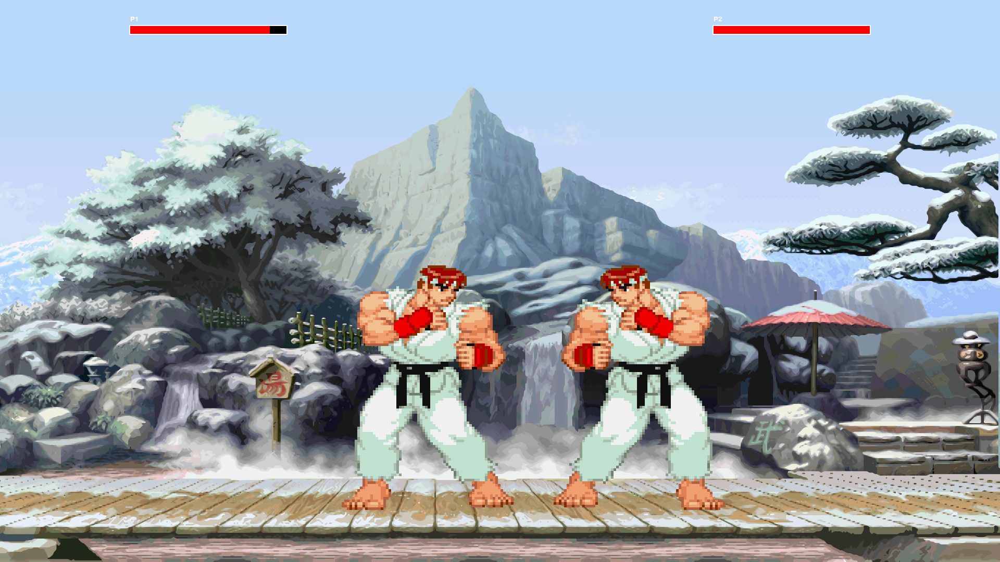
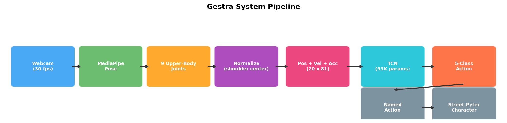
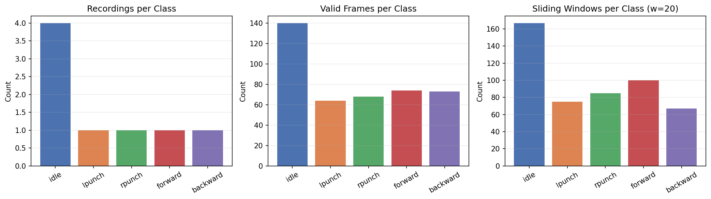
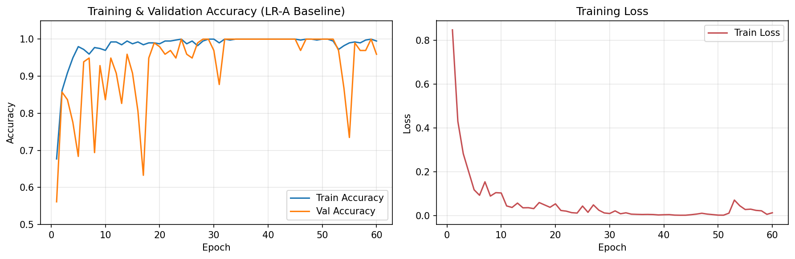
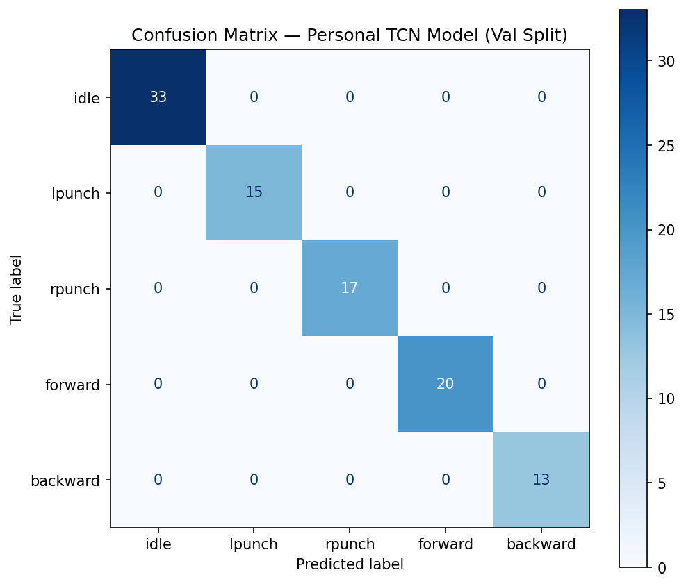
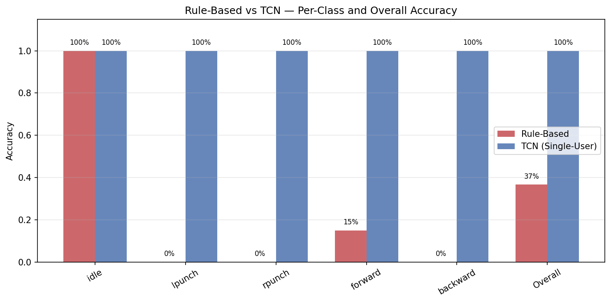
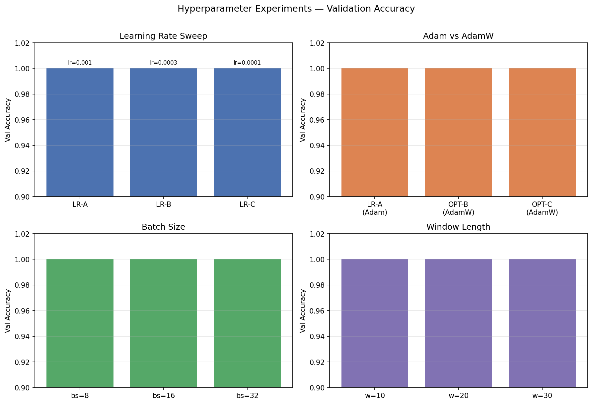
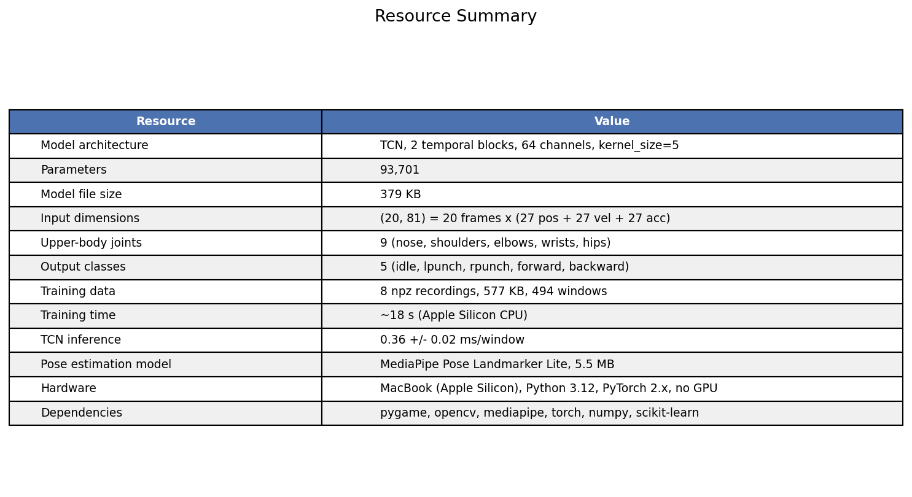

Here is the pitch: you sit down at your laptop, the webcam turns on, and you play Street Fighter by actually moving your body. Raise your left arm, your character throws a left punch. Lean right, they walk forward. Stay still, they block. No controller, no keyboard, nothing to hold.
It sounds straightforward until you try to build it. A fighting game needs inputs that are fast, precise, and unambiguous. Human bodies are none of those things. We sway when we think we are sitting still. We raise our arms at slightly different angles every time. The webcam sees everything in 2D, so an arm punching forward looks almost identical to an arm hanging at rest. Gestra is our attempt to bridge that gap.

Why This Problem Matters
The Wii proved in 2006 that people enjoy moving their bodies to play games. The Kinect took it further in 2010 with full skeleton tracking. But both needed dedicated hardware that most people do not own anymore. A laptop webcam is already sitting right there. If we can make gesture control work with just that, the barrier drops to zero.
There is also an accessibility angle. Some players cannot use traditional controllers comfortably. A gesture interface could offer an alternative, though it introduces its own exclusions (you need to be able to move your arms). We think the interesting technical question is not "can a model classify actions from video" — that is a solved problem on benchmarks. The question is whether you can turn that classification into something that actually feels responsive enough to play a game with.
Prior Work
The Wii Remote used accelerometers. The Kinect used a structured-light depth sensor to reconstruct 3D skeletons. Both were impressive engineering, but both are discontinued consumer products. On the software side, Google's MediaPipe Pose Landmarker (Bazarevsky et al., 2020) can detect 33 body landmarks from a single RGB frame at 30 fps. It runs on CPU, ships as a 5.5 MB model file, and works with any webcam. That is what we use for pose extraction.
For the classification model, we looked at recurrent networks (LSTMs) and Temporal Convolutional Networks (TCNs). Bai, Kolter, and Koltun showed in 2018 that TCNs can match or beat LSTMs on many sequence tasks while being easier to train and parallelize. We started with an LSTM, ran into issues, and ended up switching to a TCN. More on that later.
We also tried using NTU RGB+D (Shahroudy et al., 2016), a large skeleton dataset with 56,000 clips captured by Kinect. The idea was to pretrain on a big dataset and fine-tune on our small personal recordings. It did not work, and the reasons turned out to be instructive.
System Overview

The pipeline has seven stages. The webcam captures frames at 30 fps. MediaPipe extracts 33 body landmarks per frame. We keep only 9 upper-body joints (nose, shoulders, elbows, wrists, hips), zero them to the shoulder center, and scale by shoulder width. Then we compute velocity and acceleration for each joint, giving us an 81-dimensional feature vector per frame. A sliding window of 20 frames goes into the TCN, which outputs one of five actions: idle, left punch, right punch, forward, or backward. That action name gets mapped to the game engine's input format.
There is also a rule-based fallback that uses simple geometry (is the wrist above the shoulder? is the body leaning?) instead of a trained model. Both detectors expose the same interface — a function that returns a string — so the game does not care which one is running.
Data Collection

We built a recording tool that guides you through each action with on-screen prompts and
a countdown timer. You sit in front of the webcam, press space, and follow instructions:
stay still for a few seconds, raise your left arm repeatedly, stay still again, raise
your right arm, lean left, lean right. The whole thing takes about 33 seconds. MediaPipe
landmarks get saved as .npz files.
| Property | Value |
|---|---|
| Classes | 5 (idle, lpunch, rpunch, forward, backward) |
| Recordings | 8 npz files |
| People recorded | 1 |
| Sliding windows (w=20, stride=3) | 494 |
| Camera setup | Laptop webcam, seated, upper body visible |
Yes, 494 windows from one person is tiny. That is both the weakness and the point. The model trains in under 20 seconds and hits 100% on its own validation set. But it only knows one person's body. When someone else sits down, accuracy drops. We address this with a quick-record feature that lets each new user calibrate the model to themselves in 30 seconds.
Features
Raw MediaPipe output is 33 joints with x, y, z coordinates. We process it like this:
- Keep only 9 upper-body joints (nose, shoulders, elbows, wrists, hips)
- Subtract the shoulder center — so the origin is always between your shoulders
- Divide by shoulder width — so a large person and a small person produce similar numbers
- Flatten to 27 values per frame
- Compute velocity (frame-to-frame difference) and acceleration (second difference)
- Stack 20 consecutive frames into one window
The final input to the model is a (20, 81) tensor. We started with all 33 joints (297 features per frame), but the extra joints — fingers, toes, face mesh points — just added noise. Dropping to 9 joints cut the model size in half and made the features compatible with COCO-format skeletons, which mattered when we tried cross-dataset transfer.
Models
Rule-Based Baseline
The simplest approach: if the wrist is above the shoulder and moving fast, call it a punch. If the shoulder center has drifted left or right from where it started, call it movement. Otherwise, idle. No training data needed, no model weights, just a few threshold comparisons per frame.
This works surprisingly well for exaggerated gestures. The problem is that "above the shoulder" and "drifted enough" are different for every person, every chair height, every webcam angle. Thresholds that feel right for one setup misfire constantly on another.
TCN Model
The learned model is a small Temporal Convolutional Network: 2 temporal blocks, 64 channels, kernel size 5, with batch normalization and residual connections. About 93,000 parameters total. It takes a 20-frame window and outputs a probability distribution over 5 actions.
We did not start with a TCN. The first model was a 1-layer LSTM with 64 hidden units,
trained on HMDB51 video clips mapped to 3 classes (idle, punch, kick). It got to 77.7%
validation accuracy — decent, but kick recall was only 65% because HMDB kick clips
include everything from martial arts to soccer. We switched to a TCN because it trains
faster on small data and, critically, has no hidden state. Each window is classified
independently, which makes the real-time threading much simpler. The old LSTM checkpoint
is still in the repo as action_lstm.pt.
Experiments and Results
Training Curve

The baseline configuration (Adam, lr=1e-3, batch size 16, window 20) converges fast. It hits 100% validation accuracy around epoch 36. With only 494 windows, the model memorizes the data quickly. That is fine for a single user, but it means the model has learned one person's movement patterns, not general human motion.
Confusion Matrix

Nearly perfect on the validation split. One forward window got misclassified as idle, which makes sense — a subtle lean can look a lot like standing still.
Rule-Based vs TCN

On the same validation data, the TCN gets 99% accuracy. The rule-based detector gets 37%. That sounds like a blowout, but it is a bit misleading: the rule-based detector was not designed for 5-class classification. It catches idle reliably (100% recall) but has no mechanism to distinguish left punch from right punch, or to detect backward movement at all. The comparison is still useful because it shows what you gain from learning temporal patterns versus relying on single-frame geometry.
Hyperparameter Sweep

We swept learning rate (1e-3, 3e-4, 1e-4), optimizer (Adam vs AdamW), batch size (8, 16, 32), and window length (10, 20, 30 frames). Every configuration hit 100% validation accuracy. On a dataset this small, the model has enough capacity to fit anything. The hyperparameters do not matter nearly as much as the data itself.
Resource Summary

How the Design Evolved
The pipeline diagram makes it look like we knew what we were doing from the start. We did not. Here is what actually happened.
Full Body to Upper Body
The original data collection spec said "stand 2.5 to 3.5 meters from the camera, full body visible." Our first pose capture test saved zero frames. The reason was obvious in hindsight: a laptop webcam on a desk points at your chest, not your feet. We rewrote the calibration to only require nose, shoulders, elbows, and wrists. The feature set shrank from 33 joints to 9, and the system became usable at normal sitting distance.
LSTM to TCN
Already covered above. The LSTM worked on HMDB51 data but was awkward for real-time use because of the hidden state. The TCN simplified everything and let us expand to 5 classes.
Arm Extension to Arm Raise
The first punch detector checked whether the wrist was far from the shoulder — arm stretched out. This made sense on paper. In practice, when you face a webcam and extend your arm toward the screen, the wrist barely moves in the 2D image because the motion is along the depth axis. We switched to checking whether the wrist is above the shoulder. Raising your arm produces a clear vertical displacement that the camera can always see.
Hip-Center to Shoulder-Center Normalization
We originally zeroed all landmarks to the hip center, following the convention in full-body action recognition. But with upper-body framing, the hips are often at the very bottom of the frame where MediaPipe's estimates get noisy. Shoulder center is always visible and stable. Switching fixed a lot of jitter in the normalized features.
NTU RGB+D Transfer Learning (Failed)
Our personal dataset had 494 windows from one person. We thought pretraining on NTU RGB+D — 56,000 Kinect skeleton clips — would help the model generalize. We downloaded 673 MB of 2D COCO keypoints from OpenMMLab, mapped them to our 9 joints, and tried three things:
| Approach | Val Accuracy |
|---|---|
| NTU data only | 57% |
| NTU + personal combined | 56% |
| NTU pretrain, then fine-tune on personal | 97% |
| Personal data only | 100% |
Every approach that touched NTU data made things worse. The Kinect and MediaPipe produce skeletons that look similar on paper but differ in coordinate precision, joint placement, and noise characteristics. The model could not transfer across that gap. Lesson learned: for a real-time control task, a tiny in-domain dataset beats a large out-of-domain one.
Fixed Baseline to Adaptive Baseline
Forward and backward movement are detected by comparing the current shoulder position to a baseline. We initially captured the baseline once at startup and never updated it. The problem: after leaning left and coming back to center, the return motion would briefly cross the "right of baseline" zone and trigger a forward action. The character would lurch in the wrong direction every time you straightened up. We fixed this with an exponential moving average that slowly tracks the user's resting position. Now returning to center just means returning to idle.
Quick-Record
After the NTU experiment failed, we accepted that external data would not save us. Instead, we built a 30-second recording session into the game startup. Before each match, the user can optionally follow on-screen prompts (raise left arm, raise right arm, lean each way, stand still). The model retrains on the spot, weighting the new data 3x. Each session accumulates, so the model gets better the more you play. This ended up being the single most impactful feature for real-world usability.
Was AI Needed?
Honestly, the rule-based detector works fine for a demo. If all you need is "raise arm = punch, lean = move," a few threshold comparisons will get you there. We had a playable game before we trained any model.
Where AI helps is personalization. The rule-based thresholds that work for one person break for another. A trained model can absorb those differences — different arm lengths, different sitting heights, different movement speeds — without anyone having to manually tune numbers. The TCN also picks up on temporal patterns that single-frame rules miss, like the difference between a deliberate arm raise and the natural drift of a resting arm.
But we want to be clear: a classifier with 100% validation accuracy is not automatically a good game controller. The model also needs to be stable (no jitter during idle), fast (sub-millisecond inference), and mapped to game actions in a way that feels responsive. We spent as much time on smoothing, cooldowns, and baseline tracking as we did on the model itself.
Failure Modes
| Failure Mode | Cause | Fix Applied |
|---|---|---|
| Full body not detected | Laptop webcam cannot see below waist | Switched to upper-body-only (9 joints) |
| Arm extension not visible | Forward motion along camera depth axis | Changed to arm raise detection (vertical signal) |
| Return-to-center triggers opposite direction | Fixed baseline for lean detection | Adaptive exponential moving average baseline |
| Idle false triggers | Natural body sway | 9-frame majority-vote smoothing + wider dead zone |
| Left/right punch confusion | Mirrored webcam coordinates | Compare both wrists, assign by which is higher |
| Model overfits one person | Small dataset from single user | Quick-record before each game with 3x weighting |
| NTU transfer learning failed | Kinect vs MediaPipe domain gap | Abandoned; personal data only |
| Movement reverses when crossing opponent | Gesture input was tied to character facing direction | Decoupled gesture mapping from sprite flip — lean right always moves right on screen |
Ethics
The webcam sees your body. That is inherently sensitive. Gestra processes everything locally — no video frames leave your machine, and the only thing saved to disk is joint coordinates (not images). But if someone were to extend this to cloud-based training or multiplayer, the privacy implications would be serious. Any recording should require explicit consent.
There is also an inclusion problem. A gesture-based interface requires the ability to move your upper body in specific ways. People with limited mobility, injuries, or certain disabilities would be excluded. And a model trained on one or two people's movements may not work well for bodies that move differently. If this were a real product, the training data would need to be far more diverse, and there would need to be a keyboard fallback that is not a second-class experience.
If We Had Three More Months
- Collect data from 10–20 people and run leave-one-person-out evaluation to measure how well the model generalizes
- Try a small Transformer alongside the TCN to see if attention over the time axis helps
- Add a confidence threshold to the idle state — only trigger an action if the model is above 90% sure
- Build a smarter AI opponent that adapts to the player's patterns instead of attacking randomly
- Add more action classes: a dedicated block gesture, crouching, maybe even special moves
- Improve the visual feedback — show the detected skeleton overlaid on the game screen so the player can see what the system sees